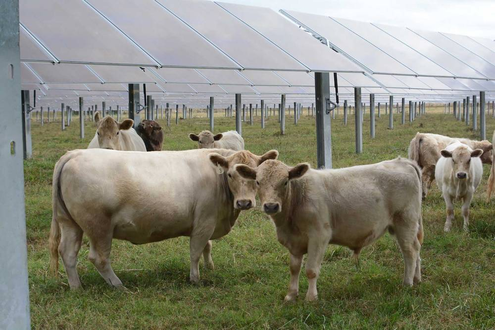

美 테네시 태양광 단지에 소 15마리 방목…풀베기 75% 맡기고 설비 보강비는 3%만 더 들어

실리콘랜치 3.25MW 크리스티애나 단지, 패널 기울기 줄이는 '방목 모드'로 소와 설비 함께…최대 300MW 사업으로 넓힐 곳 찾는 중
미국 테네시주 최대 태양광 개발사 실리콘랜치(Silicon Ranch)가 3.25MW 규모 크리스티애나(Christiana) 태양광 단지에 소 15마리를 들여 6개월째 패널 아래 풀을 뜯게 하고 있다. 회사는 이를 미국에서 처음으로 상업성을 갖춘 대규모 '태양광+소 방목' 사업이라고 설명한다. 소가 설비를 건드리지 않도록 기둥을 평소보다 조금 높이고, 소가 들어가 있는 구역의 추적식 패널은 최대 60도까지 기울던 것을 20~30도로 묶는 '방목 모드'를 적용했는데, 보강 비용은 일반 설계보다 3% 많은 데 그쳤다. 소들은 전기 울타리로 나눈 15개 구역을 며칠씩 옮겨 다니며 약 45일에 한 바퀴를 도는데, 첫 6개월 동안 단지 풀베기의 약 75%를 맡았고 목초지가 자리 잡으면 95%까지 맡을 수 있다는 것이 회사 판단이다. 이 단지의 전기는 지역 전력회사 미들테네시전력(Middle Tennessee Electric)이 테네시강유역개발공사(TVA)에서 사 오던 도매 전력보다 싼값에 팔리고 있으며, 회사는 최대 300MW 규모 사업에도 이 방식을 적용할 곳을 찾고 있다. 다만 일부 패널의 기울기를 제한하는 만큼 발전량이 조금 줄고, 소가 내뿜는 메탄 때문에 단지의 온실가스 배출은 늘어난다는 한계도 있다.
시민에너지 관점
보강 비용 3%로 소와 패널이 한 땅에서 함께 돈을 버는 테네시 사례는 영농형 태양광을 논밭에만 묶어 두는 우리 논의를 넓혀 준다. 농촌이 태양광을 반대하는 가장 큰 이유는 농사 땅이 사라지고 수익은 외지 사업자에게 간다는 걱정인데, 땅을 계속 농축산에 쓰면 첫째 걱정은 덜 수 있다. 남은 과제는 수익의 주인이다. 우리나라에서는 초지와 방목지를 가진 축산 농가와 마을이 직접 지분을 갖는 협동조합 방식으로 설계하고, 정부는 영농형 태양광 제도에 방목 모델과 농가 출자 우선 지원을 넣어야 한다.
출처: AGDAILY(Canary Media 기사 전재) 2026-11-12 Julian Spector 원문 보기
米テネシー州の太陽光発電所で牛15頭を放牧…草刈りの75%を任せ、設備補強費は3%増のみ
シリコンランチの3.25MWクリスチアナ発電所、パネルの傾きを抑える「放牧モード」で牛と設備が共存…最大300MW事業への拡大先を探す
米テネシー州最大の太陽光開発会社シリコンランチ（Silicon Ranch）は、出力3.25MWのクリスチアナ（Christiana）太陽光発電所に牛15頭を入れ、6カ月にわたりパネルの下で草を食ませている。同社はこれを米国で初めて商業性を備えた大規模な「太陽光＋牛の放牧」事業だと説明している。牛が設備に触れないよう支柱を通常より少し高くし、牛がいる区画の追尾式パネルは最大60度まで傾いていたものを20～30度に制限する「放牧モード」を採用したが、補強費用は通常設計より3%多いだけだった。牛は電気柵で分けた15の区画を数日ずつ移動し、約45日で一巡する。最初の6カ月で発電所の草刈りの約75%を担い、牧草地が定着すれば95%まで担えるというのが同社の見方だ。この発電所の電気は地域の電力会社ミドルテネシー・エレクトリック（Middle Tennessee Electric）が、テネシー川流域開発公社（TVA）から買っていた卸電力より安い価格で販売されており、同社は最大300MW規模の事業でもこの方式を適用できる場所を探している。ただし、一部パネルの傾きを制限する分だけ発電量がやや減り、牛が出すメタンにより発電所の温室効果ガス排出は増えるという限界もある。
市民エネルギーの視点
補強費3%で牛とパネルが同じ土地で共に稼ぐテネシーの事例は、営農型太陽光を田畑だけに限ってきた韓国の議論を広げてくれる。農村が太陽光に反対する最大の理由は、農地が消え、収益は外部の事業者に行くという懸念だが、土地を農畜産に使い続ければ一つ目の懸念は和らぐ。残る課題は収益の持ち主だ。韓国では草地や放牧地を持つ畜産農家と村が直接持ち分を持つ協同組合方式で設計し、政府は営農型太陽光の制度に放牧モデルと農家出資の優先支援を盛り込むべきだ。
出典: AGDAILY(Canary Media 기사 전재) 2026-11-12 Julian Spector 原文を読む
美国田纳西光伏电站放牧15头牛……承担75%除草工作，设备加固成本仅增加3%
硅牧场公司3.25兆瓦克里斯蒂安娜电站以限制组件倾角的"放牧模式"让牛与设备共存……正寻找可推广至最大300兆瓦项目的场址
美国田纳西州最大的太阳能开发商硅牧场公司（Silicon Ranch）在装机3.25兆瓦的克里斯蒂安娜（Christiana）光伏电站引入15头牛，已在组件下放牧6个月。公司称，这是美国首个具备商业可行性的大型"光伏+养牛放牧"项目。为防止牛碰坏设备，支架比平常略高；牛群所在区域的跟踪式组件原本最大可倾斜60度，在"放牧模式"下限制为20至30度，而加固成本仅比常规设计高3%。牛群在用电围栏分隔的15个区块间每隔几天轮换，约45天轮完一圈；头6个月承担了电站约75%的除草工作，公司认为牧草稳定后可承担到95%。该电站的电力以低于当地电力公司中田纳西电力（Middle Tennessee Electric）从田纳西河谷管理局（TVA）购入的批发电价出售，公司正在寻找能把这一方式用于最大300兆瓦项目的场址。不过，部分组件倾角受限会使发电量略有下降，牛排放的甲烷也会增加电站的温室气体排放。
市民能源视角
以3%的加固成本让牛和光伏在同一块地上共同创收，田纳西的案例拓宽了韩国把农光互补局限于农田的讨论。农村反对光伏的最大原因，是担心农地消失、收益流向外地开发商；只要土地继续用于农牧业，第一个担忧就能缓解。剩下的问题是收益归谁。在韩国，应以拥有草地和牧场的畜牧农户与村庄直接持股的合作社方式设计项目，政府也应在农光互补制度中纳入放牧模式，并优先支持农户出资。
来源: AGDAILY(Canary Media 기사 전재) 2026-11-12 Julian Spector 查看原文
Tennessee solar farm grazes 15 cattle under its panels, handing them 75% of the mowing for just 3% more in hardening costs
Silicon Ranch's 3.25MW Christiana site uses a "graze mode" that limits panel tilt so cows and equipment coexist; the developer is scouting projects of up to 300MW for the model
Silicon Ranch, Tennessee's largest solar developer, brought 15 cattle to its 3.25MW Christiana solar farm six months ago and has had them grazing beneath the panels since. The company calls it the first commercially viable utility-scale project in the United States to combine solar power and cattle. To keep the animals from damaging equipment, it raised the steel piles slightly and applied a "graze mode" that limits trackers in the active paddock to a 20- to 30-degree tilt instead of the usual maximum of 60 degrees, holding the extra hardening cost to 3% over a standard design. The herd rotates every few days among 15 paddocks fenced with electrified wire, completing a cycle in about 45 days; in the first six months it handled about 75% of the site's mowing, and the company expects that to reach 95% once the pasture is established. Power from the site is sold to local utility Middle Tennessee Electric for less than the wholesale rates it was paying the Tennessee Valley Authority, and the company is looking for places to deploy the system on projects of up to 300MW. The approach has limits: restricting the tilt of some panels trims output slightly, and methane from the cattle adds to the site's greenhouse gas emissions.
Citizen Energy View
A Tennessee farm where cows and panels earn from the same land for a 3% cost premium widens a Korean debate that confines agrivoltaics to rice paddies and crop fields. Rural opposition to solar rests mainly on fears that farmland will disappear and profits will flow to outside developers, and keeping land in agricultural use answers the first fear. What remains is who owns the returns. Korea should design such projects as cooperatives in which livestock farmers and villages with pasture hold equity directly, and the government should add grazing models and priority support for farmer investment to its agrivoltaics rules.
Source: AGDAILY(Canary Media 기사 전재) 2026-11-12 Julian Spector Read the original